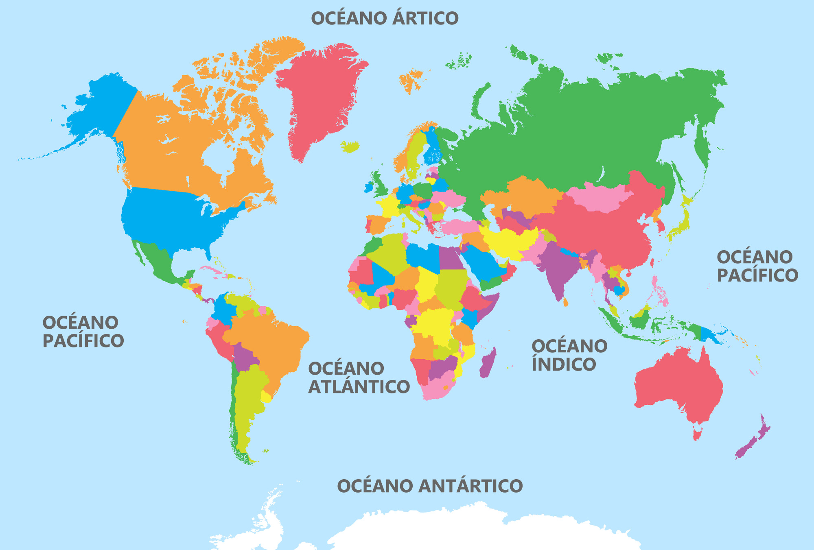

Inicio
Aventura Marina
Explora los océanos
Vida Marina
Héroes
Amenazas
Explora y Aprende
Aprende
Recursos
Conócenos
Nosotros
Contacto
Explora los océanos

Ficha por región
Océano Pacífico
Océano Atlántico
Océano Índico
Océano Ártico
Océano Austral (o Antártico)